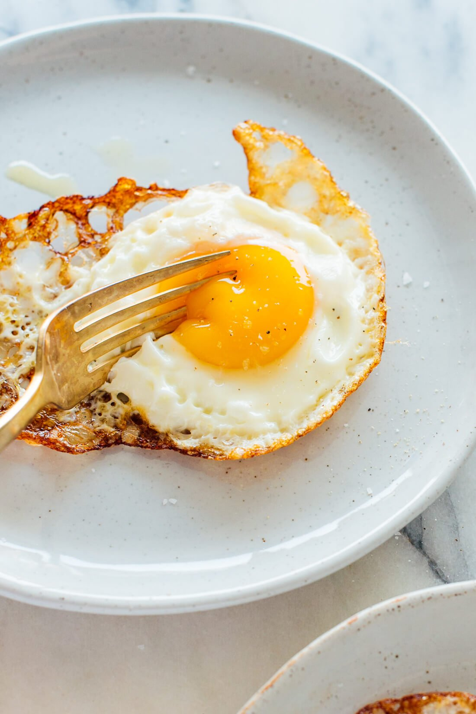

Fried Eggs

The Best Fried Eggs
Having a PERFECTLY COOKED CRISPY FRIED EGG is the perfect addition to any number of meals. Eat it stand alone for a fantastic breakfast, elevate avocado toast with a perfectly runny fried egg on top, or complete your favorite stir fry with the crispiest of fried eggs! This recipe will give you everything you need to know to have your favorite fried egg any time you please!
Prep Time: 1 mins | Cook Time: 4 mins | Total Time: 5 mins
Ingredients
- 1 tablespoon extra-virgin olive oil
- 1 egg
Steps
- Cooking 1 egg? Pull out a small skillet, preferably cast iron. Cooking 2 eggs? Use a medium-to-large skillet and use 2 tablespoons of olive oil.
- Crack an egg into a small bowl or ramekin and place it near the stove. Warm your skillet over medium-high heat until it’s hot enough that a drop of water sizzles rapidly on contact.
- Reduce the heat to medium and add the olive oil to the pan. Gently tilt the pan around so the olive oil covers the base of the pan. The olive oil should be so warm that it shimmers on the pan (if not, give it a little more time to warm up).
- Carefully pour the egg into the skillet and watch out for hot oil splatters (if you’re planning to add another egg to the same pan, pour it onto the side so there’s room for another).
- Let the egg cook, gently tilting the pan occasionally to redistribute the oil, until the edges are crisp and golden and the yolk is cooked to your liking, about 2 minutes for runny yolks or 2 ½ to 3 minutes for medium yolks. (If you’re adding another egg to the skillet, go ahead and do it while the other is cooking.)
- Transfer the cooked egg(s) to a plate. If you’d like to cook more eggs in the same skillet, add another drizzle of olive oil, leave the heat at medium (you might even need to dial it down a bit to avoid smoking) and add your next egg. Repeat as necessary.
Notes
SEASONING SUGGESTIONS: I love a sprinkle of flaky sea salt, freshly ground black pepper, and sometimes a splash of hot sauce.